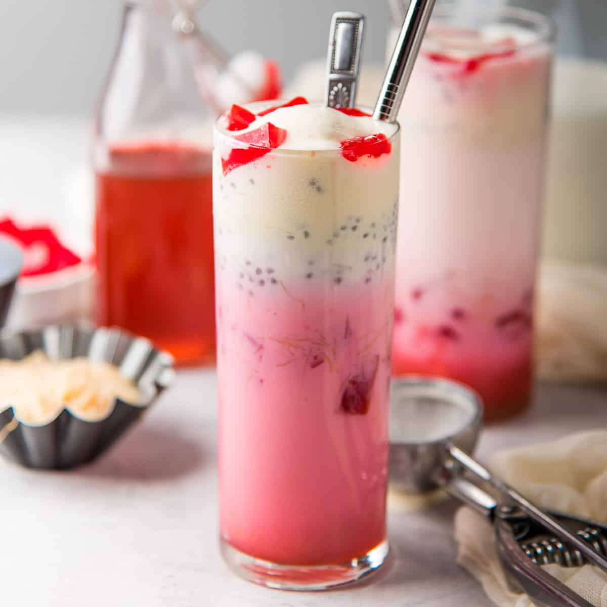

Soak basil seeds in water for about 10 minutes until they expand. Prepare jelly and cut it into small cubes. In a tall glass, add layers starting with jelly, then soaked basil seeds, followed by milk. Add a scoop of ice cream on top and drizzle with syrup if desired. You can also add falooda noodles. Serve chilled with a spoon and straw.
Back